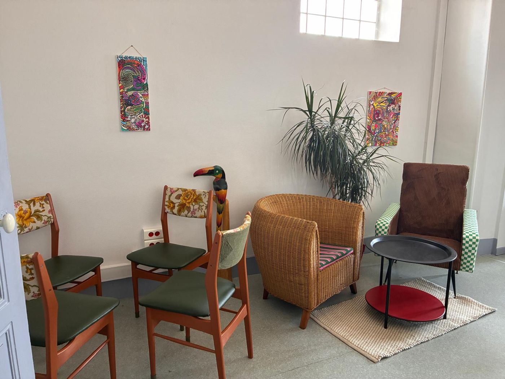

Bureau
Plateau bois, caisson noir à chevrons, piètement métal noir.
220 €Disponible
Chaque pièce est chinée, restaurée puis retravaillée à la main : tissu, peinture, détail graphique. Des meubles uniques, contemporains et raffinés.
Pièces exposées au tiers-lieu Le Génie, 12 rue du Génie, Montauban.

Chaque meuble est un exemplaire unique. Une pièce vous plaît ? Réservez-la et venez la voir au Génie.
Plateau bois, caisson noir à chevrons, piètement métal noir.

Velours côtelé marron, accoudoirs damier vert et blanc, pieds compas.

Bois laqué terracotta, dossiers en tissu fleuri, assises vert olive.

Fauteuil cabriolet en rotin, galette rayée rose et verte.

Structure rouge, dossier bouclette bleue, assise zébrée, barreau damier.

Couvercle rose et damier, flancs rayés noir et blanc.
Description à compléter.
Description à compléter.
Prix TTC. Mention TVA à confirmer selon le statut de Marie. Dimensions sur demande.
En une demi-journée, vous repartez avec votre tabouret style hairpin, tapissé de vos mains. Vous apprendrez à maîtriser :
Ouvert à tous, débutants ou initiés. Tout le matériel est fourni, tabouret compris. En partenariat avec Occitalien.
J'aime les belles choses, les objets qui ont une histoire.
Après plusieurs vies professionnelles, du commerce à la couture d'ameublement, je me consacre à ce que j'aime. Je chine et je transforme le mobilier en alliant la rigueur et la créativité.
Chaque meuble raconte une histoire différente. Je m'efforce de respecter l'esprit de l'objet tout en lui apportant une touche actuelle. Redonner vie à un meuble ancien, c'est allonger sa durée de vie au lieu d'en acheter un neuf.
Odymay est un clin d'œil à mon aventure calédonienne et aux belles énergies de la tribu de POE.
Marie, créatrice d'Odymay